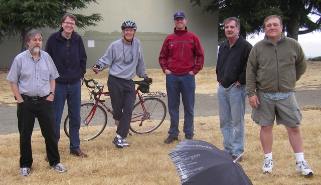

WVARA Field Day, 26-28 June 2009
The 2009 WVARA Team Celebrates a great weekend!
There's plenty of preparation that goes into Field Day before the first radio contact ever occurs. That’s part of the overall experience as well. Field Day also provides “improvisational opportunities”, since Murphy invariably shows up and nothing ever goes quite as expected.
And of course, being outdoors means that we get to put up wild-n-crazy antennas that our spouses and neighbors might never allow back home. And with Field Day, you're doing this amongst a great set of old and new friends!
Saturday’s temperature approached 100 degrees, but that didn’t stop us from having loads of fun. This year we had 3 HF CW stations, 2 HF SSB stations, an HF digital station, a GOTA station, and multiple UHF and VHF stations. Our CW operators actually worked 49 out of 50 the states. (Where was Delaware?) By the way, if the US/Canada Field Day results for 2009 are similar to 2008, our score of 14,405 will place WVARA in the neighborhood of #11 out of all 2400 Field Day participants.
Keith (KI6BDR) making some late night contacts
While we like collecting
FD points and setting new records, we also want to have fun and share
the experience with others.
We had half-a-dozen local hams (not previously associated with WVARA) and a dozen youths who dropped by our site to see the balloons and ended up becoming part of our team. In addition, our GOTA coaches, Grant and Jeanette, were skilled at snagging non-ham hikers that passed by and getting them on the air.
Scott, AD6RY, and four local teenagers who tracked us down via the ARRL Field Day website and ended staying for most of the event.
Chuck (AD6CL) and first harmonic Michael making SSB contacts.
Michael (12) and Esther Kamas (7) racking up points
at the GOTA station.
Jeff (KG6SGX) and Kenneth (W6KWF) blowing off steam at midnight (right) after nine hours of heavy SSB operating.
Here’s a summary of some of 2009 more noteworthy Field Day moments:
The Coolest Technology: Gary (K6KV) brought two homebrew HF triplexers that allowed us to simultaneously share each HF tribander between three stations running on 10- 15- and 20 meters.
The High Point of the Weekend: Svend (KF6EMB) deployed a pair of helium balloon-supported full-wavelength loop antennas on 40 and 80 meters. These antennas are based on WU0I’s award-winning QST article from July 2007, and give new meaning to that old 5th Dimension song from the 1960s: “Up, Up and Away with my Beautiful Balloon.”
The Biggest Grin: Gary (K6KV) got a charge from working W1AW on 80 meters with the balloon loop and 5 watts.
And . . .
The Most Exciting Moment: Jack (W6FB) got a real thrill -- jumping what seemed like 5 feet straight up -- after literally stepping on a large snake in the grass. Both Jack and the snake appeared to be equally surprised by the experience and rapidly departed the scene in opposite directions.
Field Day Prep

Phil Verinsky (W6TQG), Jon Griffiths (W6PI), Greg Olsen (K6XM), Nick
Ulman (KZ2V), Gary Gordon (K6KV) and Greg DesBrisay (N6GD) on Mora
Hill for the final pre-Field Day site visit (June 13). All systems
are go for the big weekend, June 26-28!
Field Day Antenna Map
Field Day is coming, and the WVARA gang is getting prepared. Here area
few shots of our team getting the sky hooks tuned and ready for the
big weekend!